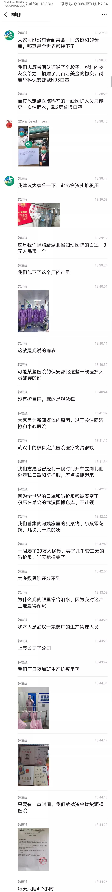
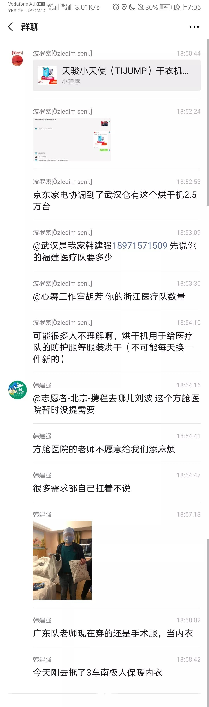

29岁武汉女孩封城后的26天：她并不想成为英雄，只是想不被绝望困住｜深度人物
原文链接 备份链接 **采写/胡琪琛 ** 编辑/计巍 宋建华 志愿者在雨中送爱心餐 在这次新冠肺炎疫情中，李小熊的身份有很多。她是司机志愿者、志愿车队队长、捐款人、募捐人，因为自己被感染，成了新冠肺炎感染者，又因父母感染，成了感染者家 …
站在浴室门口，收到消息，开始处理工作，一个半小时就这么过去了…再反应过来腿也酸痛了，躺倒在床上，夜深，欧美那边的团队又活跃了起来，消息不见减少的意思。收到一条求助，我想，还是睡吧，熬不动了。脑子里突然一个念头，或许解决一条消息，就能救前线很多人的命。大家只看到了武汉，其实武汉物资一直短缺，但是武汉外，各县市乡镇的医院，医生们用的是雨衣泳镜，普通口罩每天洗了再戴，根本没有消毒液消毒，什么吃的物资都缺。大量各种病人得不到及时确诊与治疗，太多的人自己生病自己隔离在家，社区联系不上医院，医院联系不到物资。大家不要说国家捐物资，我一直在各个团队里，这已经不是钱的事情，17个国家已经明令禁止医疗物资被运出国。我们全世界买物资，根本不够这么多窟窿，别说武汉湖北，湖南，四川，浙江，东北，广东我都对接过，哪里都严重稀缺。国家都买不到，全靠一些良心企业和老百姓人肉带回去。这场仗国家整体上已经很作为，只是真的太难了。我老是想哭。好多人求助要治愈的患者的血清，之前都要14天痊愈后的，现在净是7天就行。没人敢捐，没人受捐。群里不时就是，谢谢大家，我的家人XX已经离开。现在我的XX也已病重，请问谁能帮帮忙吗？
1.20我说这是中国的灾难，1.23时候我们已经意识到这是全人类的历史性灾难。现在连日本侨民都开始全球购物资会日本，可是中国早就买完了自己还不够。
这后面，我很多时候真的看不到希望。可我真的不想再死人了，有亲人，有要好的同学都死在了武汉。我不想要那些新去的同学们死在前线。真的想哭。
下面是携程的刘总联系到武汉是我家团队的负责人韩建强之后在我们的海关事务群发的内容，看得让人难过。今天我对接消毒水、防护服、波司登服装和水果罐头，一瞬间被刚刚医院专员抢完…唉！





DW深度 北林
长按二维码向我转账
受苹果公司新规定影响，微信 iOS 版的赞赏功能被关闭，可通过二维码转账支持公众号。
原文链接 备份链接 **采写/胡琪琛 ** 编辑/计巍 宋建华 志愿者在雨中送爱心餐 在这次新冠肺炎疫情中，李小熊的身份有很多。她是司机志愿者、志愿车队队长、捐款人、募捐人，因为自己被感染，成了新冠肺炎感染者，又因父母感染，成了感染者家 …
原文链接 备份链接 大家好，我是田静。 今天周二，2020年2月18日，北京晴，微风。 漫长的假期，周而复始的宅家生活，我都快失去对日程的知觉。 平日里，我们可以通过三餐、工作、社交等各种方式，来赋予我们生活的秩序。 这突然降临的大段自由 …
原文链接 备份链接 文/雷成林 编辑/大风 突然爆发的疫情几乎让所有的线下门店停摆。在实体业溃败之后，电商护住了城市的血脉，快递员、外卖小哥、线上买菜维持着城市的运转。 在农村，疫情导致各地封村封路，所有的线下交易暂停，农户的果蔬被滞留在 …
原文链接 备份链接 物资抵达武汉只是第一步，如何将这些物资及时、有效、尽量低损耗地分发给有需要的人，更是难题 文 |《财经》记者 刘以秦 编辑 | 谢丽容 2月16日上午10点，12辆货车抵达武汉武东收费站，他们连夜从江西赣州赶来，载 …
原文链接 备份链接 曹彦/ 华中科技大学新闻与信息传播学院 伍杨的一身“行头”几乎把整个人都吞了。 臃肿的棉袄外套着白色的防护服，戴着皱起来的蓝色防护手套，头顶是一个半旧棒球帽，只露出染过色的齐肩短发，透明护目镜下是两层叠加的口罩。她站在 …